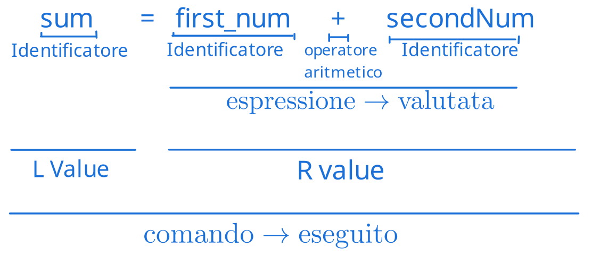

Valutazione di un algoritmo¶
Un algoritmo può essere valutato sulla base di diversi fattori:
- Correttezza
- Dimostrazion eformale (matematica)
- Ispezione informale
- Utilizzo delle risorse
- Tempo di esecuzione
- Utilizzo della memoria
- Altre risorse (e.g. banda)
- Semplicità
- Comprensibilità e mantenibilità
Nello specifico, il tempo di esecuzione può dipendere (e può essere influenzato) da tanti fattori
Per questo motivo, quando valutiamo un algoritmo dobbiamo definire un modello
La macchina astratta¶
La macchina astratta è un modello di calcolo su cui è possibile fare i conti per astrarre dei dettagli implementativi dell'hardware.
Un esempio può essere la macchina di Von-Neumann
Modello RAM - Von-Neumann¶
Il modello RAM si basa sul cercare di creare un modello che possa essere condiviso tra tutti i tipi di computer moderni, evitando tuttavia ogni tipo di ottimizzazione trasparente e non diffusa.
Il computer è suddiviso in due componenti astratti: memoria e processore.
Memoria astratta¶
La memoria astratta è un insieme finito di celle contigue di memoria, ciascuna con un indirizzo (locazione) univoco ed un contenuto (valore della cella).
Questa struttura permette operazioni di scrittura e lettura.
Possiamo rappresentare quindi le operazioni matematicamente, prendendo ad esempio l'operazione di lettura:
\(\text{memoria } \sigma: \underbrace{Loc}_{\text{Locazione di memoria}} \to \underbrace{Val}_{\text{Valore della cella}}\)
Una delle operazioni più importante è l'assegnamento, che consiste nell'assegnamento.
L'assegnamento si preoccupa di scrivere valori all'interno della locazione di memoria
Valuta l'espressione a destra dell'operatore (che spesso è il simbolo di uguaglianza, =) nella locazione di memoria rappresentata dalla variabile (o identificatore) a sinistra

Processore astratto¶
Il processore astratto permette di fare calcoli e si occupa (virtualmente) di eseguire le operazioni che andiamo a rappresentare poi con le regole di inferenza.
Si assume che le operazioni di letture es esecuzione id una computazione o scrittura impieghino una stessa unità di tempo costante.
Identificatori ed ambiente¶
Abbiamo parlato poco fa di identificatori, cerchiamo quindi di dare una spiegazione più formale:
Definizione di Identificatore
Un'identificatore è una sequenza di caratteri (è una stringa) e permette di dare nomi alle locazioni (~il loader traduce i nomi in indirizzi fisici~) all'interno di un ambiente.
Definizione di Ambiente
Un'ambiente è una funzione che associa nomi mnemonici alle locazioni
Come per la memoria, possiamo rappresentare l'ambiente con una funzione:
\(\text{ambiente } \rho: \underbrace{Id}_{\text{Identificatore}} \to Loc\)
Variabili¶
Identificano le locazioni di memoria, il cui contenuto può essere variato durante l'esecuzione
L'istruzione a=b si traduce in \(\sigma(\underbrace{\rho(a)}_{\text{Indirizzo}}) = \underbrace{\sigma(\rho(b))}_{\text{Valore}}\) (siamo sicuri non sia \(\rho(a) = \sigma(\rho(b))\)?)
Costanti¶
Le costanti sono identificatori che individuano variabili che non cambiano durante l'esecuzione. Nell'ambiente quindi, invece di avere un mapping ad una locazione di memoria, abbiamo direttamente il valore contenuto:
\(\rho: Id \to Loc \cup Var\) (che significa che dall'ambiente possiamo ottenere sia un valore (nel caso di una variabile) che una locazione di memoria (nel caso di una costante)).
Esempio
Per valutare l'espressione a = b + pi dove b è una variabile e pi è una costante, l'espressione risultante sarà \(\theta(\rho(a)) = \theta(\rho(b)) + \rho(pi)\)
Categorie sintattiche¶
Dichiarazioni¶
Definiscono gli identificatori quando sono introdotti per la prima volta.
Associano gli identificatori ad uan locazione di memoria libera, scrivendo il valore iniziale.
Si elaborano per costruire l'ambiente.
var x = 4;
\(\theta(\text{new } \rho(x)) = 4\)
Che viene dall'elaborazione della dichiarazione, che estende l'ambiente \(\Delta\) in \(\Delta^I\):
\(\Delta \vdash_d D: \Delta^I\) (che significa che dato un ambiente statico \(\Delta\), elaborando la dichiarazione D, l'ambiente viene esteso, trasformando l'ambiente statico \(\Delta\) in \(\Delta^I\))
Comandi¶
I comandi descrivono il cambiamento di stato e modificano la memoria o lo stato delle periferiche.
I comandi si ESEGUONO
x = y + x;
\(\sigma(\rho(x)) = \sigma(\rho(y)) + \sigma(\rho(x))\), elaborato dalla regola
\(C: \Delta \vdash_c C\)
Dato un ambiente \(\Delta\), eseguendo il comando con i tipi definiti in \(\Delta\) è tutto corretto
Espressioni¶
Le espressioni rappresentano i valori su cui si opera NON modificano la memoria.
Le espressioni si valutano
2*(x+y)
\(E: \Delta \vdash_e: \tau\)
Dato un ambiente \(\Delta\), l'espressione è ben formata ed è di tipo \(\tau\)
Classi di complessità¶
Le classi di complessità ci permettono di categorizzare gli algoritmi in funzione della grandezza dell'input.
Il tipo di comparazione che viene fatta è molto spannometrica, nel senso che spesso si tende a definire l'ordine di grandezza con cui l'algoritmo cresce, oppure il massimo (o minimo) tempo garantito che l'algoritmo impiegherà a fornire una risposta in funzione della grandezza dell'input. Il tutto approssimando il risultato a monomi (quindi ad esempio \(log(n)\),\(n\),\(n^2\), \(n!\), \(n^n\), etc...)
Questo tipo di valutazione ci consente di categorizzare gli algoritmi e poterli comparare in semplicità.
I tipi di categorizzazione più usati sono spesso limite superiore e limite inferiore.
Come si può intuire dal nome, questi limiti ci permettono di definire un tempo di esecuzione che sicuramente l'algoritmo (rispettivamente) non supererà o non migliorerà.
Per questo motivo il limite superiore (conosciuto come Big O notation, o semplicemente O) è usato per individuare il costo delle soluzioni.
Allo stesso modo, il limite inferiore (conosciuto come \(\Omega\), o big omega) ci permette di individuare la complessità del problema che stiamo risolvendo.
Quindi, per riassumere:
| Simbolo | Lettura | Tipo di limite | Significato |
|---|---|---|---|
| O | O-grande | Limite superiore asintotico | Peggior situazione possibile |
| \(\Omega\) | Omega Grande | Limite inferiore asintotico | Migliore situazione possibile |
| \(\Theta\) | Theta | Limite asintotico stretto | Complessità della soluzione |
(asisntotico si può leggere come "per valori che tendono a \(\pin\)")